阳了的必备神器
原创 V姐万事屋 V姐来了 2022-12-24 15:44 发表于上海 原文链接(长) 原文链接(短)Hi ,我是V姐。
这周开始我们全家陆续阳，至今还没有结束全部过程。
阳了会有什么症状，相信大家都知道了。
今天就跟大家分享一些阳了之后， **能帮你舒服很多的小东西，以及我们家不同人的反应**，给还没阳或者正在阳的朋友参考。
**关于疫苗，我们全家去年都接种了2针疫苗，今年11月初，我和我老公，接种了第三针加强针，三针都是科兴。**
上周日（18号）的时候，我们家还没有人出现不适。
本周一(19号）上午，我家姐姐（10岁）开始发烧，一开始是38度左右，抗原测试阳性。
白天她精神状态良好，可以正常上网课。到了下午4点多，温度升到39.4，给美林10毫升，温度退下来。
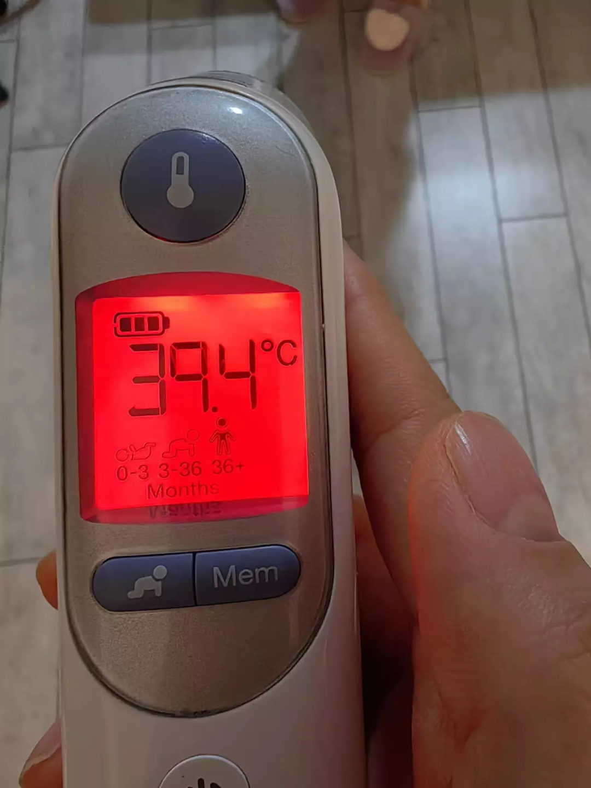
然后一直到周三，基本都是白天好一点，38.5℃左右，晚上会升高到39以上，感觉难受就吃退烧药。
周三晚上是最难受的，她描述 **浑身热，眼睛酸胀，头难受，无法闭眼，** 情绪一度哭泣崩溃。
**1、冰易拉罐**
姐姐当晚10点和夜里4点分别吃了美林，头上和脸上都贴了退热贴。另外，因为退热贴很快就会变得不凉快，所以我准备了很多 **易拉罐饮料**，放在冰箱里，热了就换一个，拿来贴着眼睛额头，小朋友说感觉很舒适。
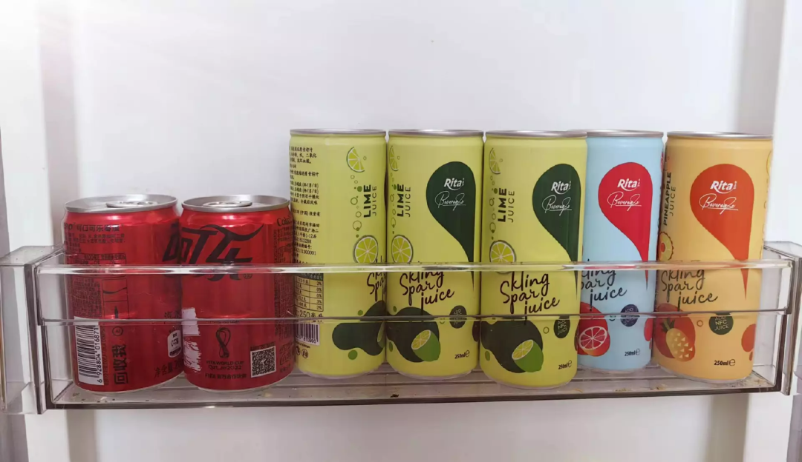
**2、盐酸赛洛唑啉鼻用喷雾剂**
到了周四，姐姐就退烧了，之后没有再发烧，精神状态良好。
但是出现鼻塞，也就是水泥封鼻。
这个喷雾是鼻炎患者常用的，可以缓解鼻塞，基本上一喷通畅。
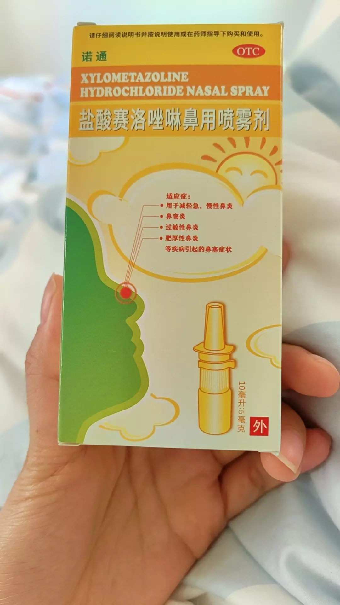
所以如果鼻子不通气的朋友可以准备一个，一般药店都有卖。鼻子完全不通，晚上很难入睡，而且严重影响味觉。
现在姐姐基本上就是有些流鼻涕，略微咳嗽，其他没有什么症状了。
**3、麦卢卡5+蜂蜜**
周一到周三，我没有发烧，但一直感觉头疼，眼睛酸胀，就是那种普通感冒的感觉。
而且我周一开始拉肚子，部分新冠患者确实出现拉肚子呕吐的症状。
于是我周三开始吃这个蜂蜜，这个是我老公肠胃不好，家中常备的。
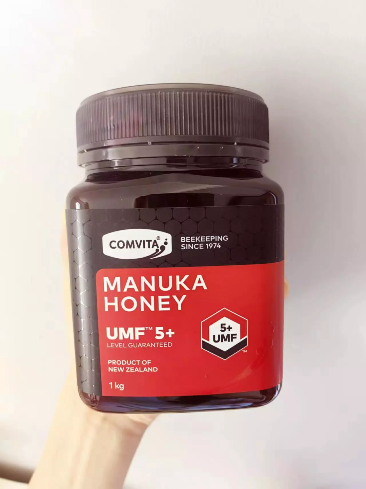
他经常说这个一吃见效，我平时感觉不出来，这次我吃了之后，拉肚子马上就好了，非常神奇，我周四开始发烧，但是没有再出现肠胃的不适。
本周四我跟我家阿姨基本上同时开始发烧，我家阿姨马上就冲到39.3℃，完全起不来，吃退烧药睡一晚，第二天好很多，但是还有38度左右。
我没有超过38.5℃过，白天都是38℃以下，晚上略微高一点，还算比较轻的症状。
**4、哲库林润喉糖**
我感觉最难受的，是夜里睡觉会觉得嗓子很干，咽口水咽不动。
除了多喝水，还推荐润喉糖，这个是我自己吃的，效果还不错。
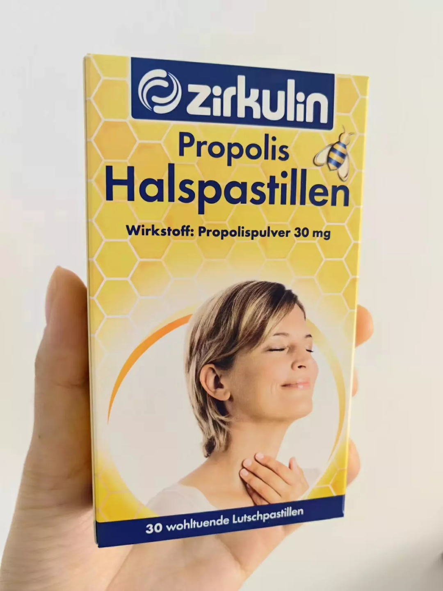
今天醒来，直到现在都体温正常，所以我赶紧来写文章了。
当然嗓子还是沙哑，所以我基本含着这个糖，周四还跟社群成员咨询电话聊了1小时，至今嗓子没有疼痛症状。
**5、保湿面巾纸+盐水鼻喷雾**
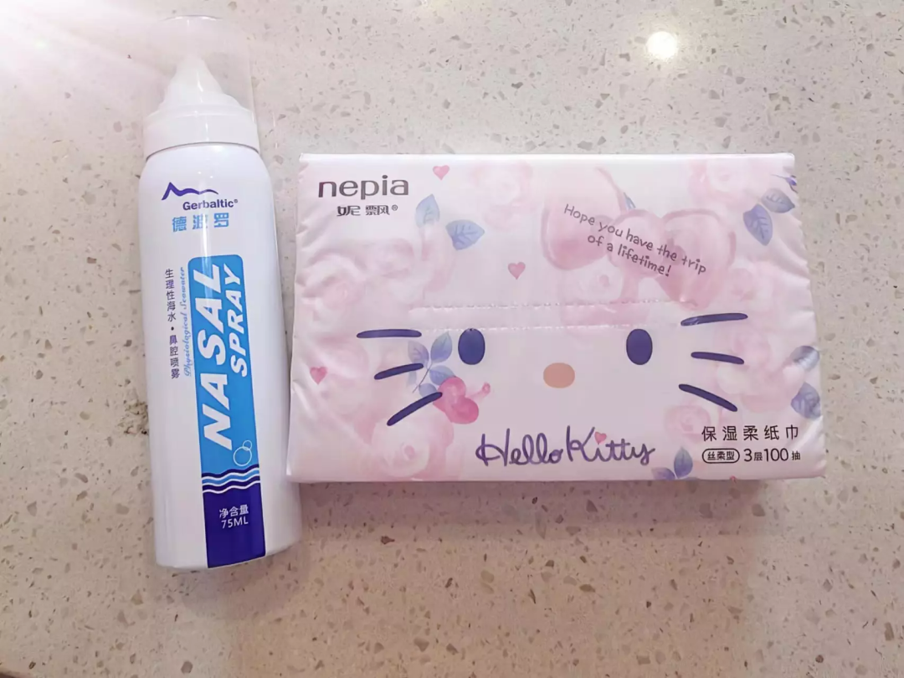
现在的我呢，就是家里每个房间都放这个面巾纸，因为全家都在擦鼻涕。
大家知道，一般面纸擦多了，鼻子附近皮肤容易疼或者发红，但是这个面纸完全不会，它非常软，非常滑，摸上去跟丝绸一样，说还有什么保湿精华，这个我也不知道，但是使用感受确实优秀。
我家也是常备的，如果有人感冒就会用它。
另外，我跟姐姐都感觉鼻涕擤不干净，就好像痰咳不出来一样。我们会用鼻喷雾两边喷2-3下，然后再擤，整个鼻腔都感觉很干净通畅。
关于咳嗽，我们家现在几个人都不算严重，吃一吃念慈菴川贝枇杷膏，吃点冰糖雪梨，目前还可以忍受。
周六上午，我家妹妹（7岁）开始发烧，温度一下子就39℃。
吃了退烧药，暂时精神良好，吃喝玩乐都不影响，当然小孩子发烧一般会多次反复，所以我也在随时观察她，估计今晚明晚都会比较难受。
我有一个不成熟的经验，小孩子的严重指标，不以温度为准，以iPad为准。
**如果给iPad也没精神玩了，那要重视，如果能玩iPad，大概率问题不大。**
**6、护肤精华油**
生病发烧的时候，很多姐妹都感觉脸很干，身上很干。
这时候，除了拿出滋润挂的护肤品，还可以拿出护肤油，脸干了就抹一下，这种芳疗的精油我比较喜欢，味道也很治愈，闻了感觉头都轻了一些。
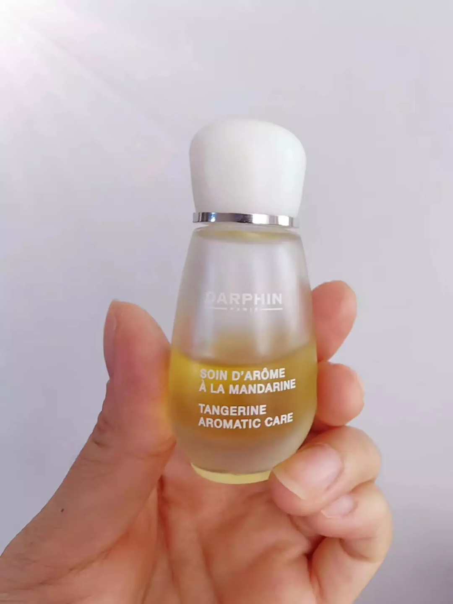
男生也可以用女朋友或者老婆的，不至于发烧一场，脸上都起皮了。
还有护唇膏最好备一个，女生一般都有，发烧的时候嘴巴很干，抹一下舒服很多。
最后，就是大家阳了， **跟家人朋友多多互动一下，发朋友圈没啥，有人安慰有人吐槽都让人精神愉快，** 精神状态对于痊愈也有影响哈。
昨天，我家小棉袄拿自己零花钱，给我买了一束花放在被子上，我醒来就感觉好了大半哈哈。
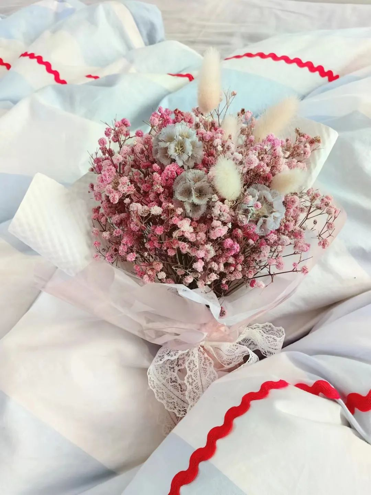
到这里，大家应该发现了，我家还有一个人，他没阳。
我家到现在，姐姐妹妹阿姨和我都阳了，我老公从周一开始就居家办公，身在羊窝，居然一点症状都没有，他也觉得不可思议，每天测抗原，浪费了好几个，今天早上还是一道杠。
天选打工人，他大概是飘了，刚刚拿着篮球出门了。
**以上就是阳了之后能帮大家舒服点的好物分享。跟本人没有任何商业关系，纯属自用产品，希望大家都能平平安安，扛过这一波。**
* * *
自从放开后，民间都在积极分享经验，部分专业人士也蛮忙的。
**统计专家每天坐在键盘前编数字，上海80例啊？**
**个么太巧了，怎么全在我朋友圈 **
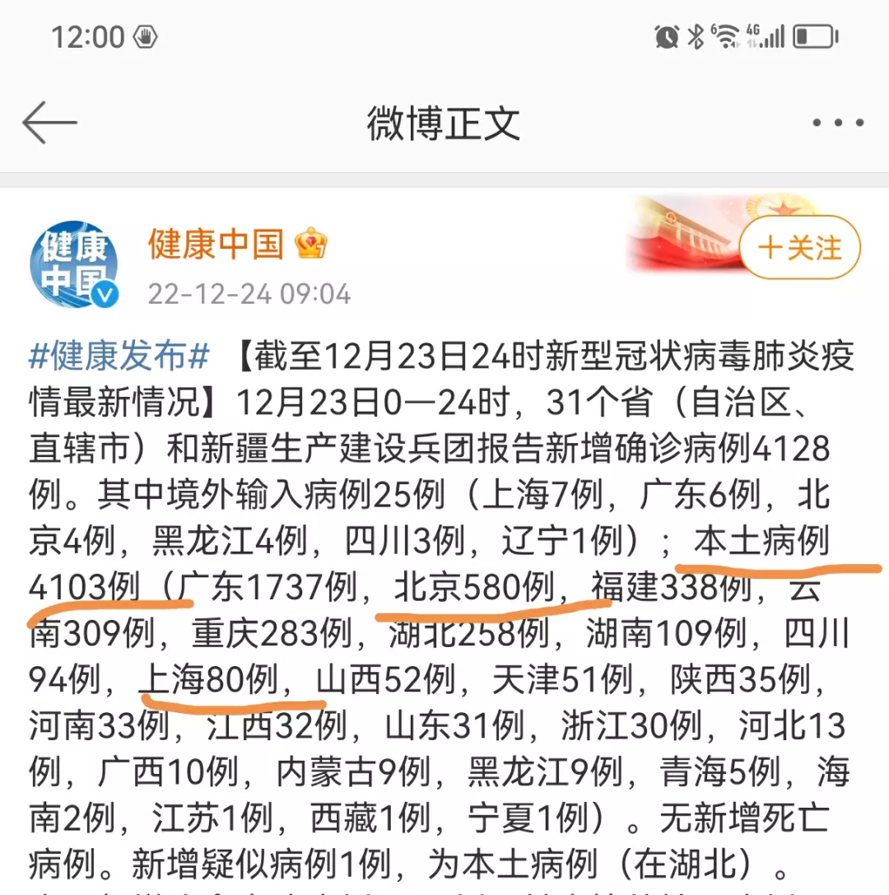
**北京的记者朋友，有的28岁住小汤山，还有的眼疾手快，抓住商场唯一的一个顾客感受生活气息。**
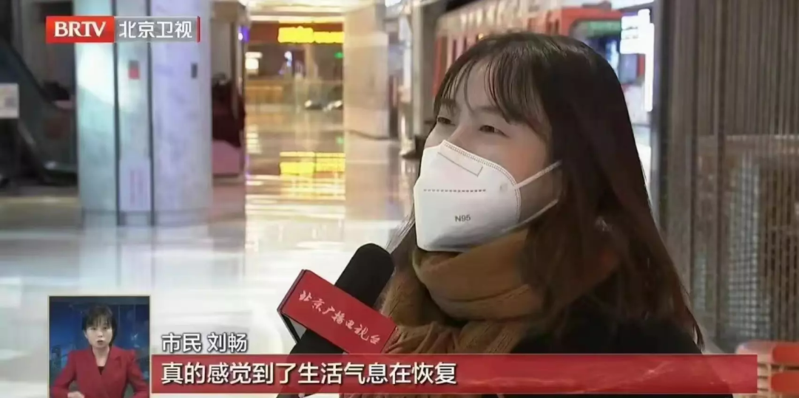
**现在影响全国人民心情，耽误大家康复的，恐怕就是这类新闻了。**
**没新闻就别发了，真的。**
**大家看6月发表在CDCweekly 上的paper，有没有人能解释一下这个接近80%无症状，4%发烧的数据是怎么来的？**
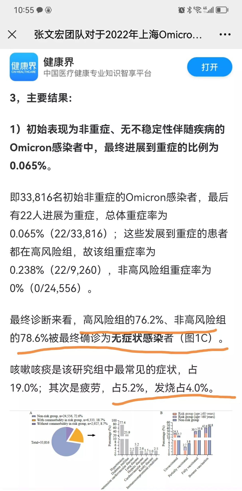
无症状可以修改定义，那发烧呢？4%发烧怎么统计的呀？
如果说现在和3-5月的变量是温度，那么就是病毒表现跟温度强相关，广东的朋友能不能告诉我，你们那里4%发烧吗？
**可能是我学术素养不够，我想破脑袋也想不明白。**
放开是必然选项，大家多少可以理解，但是直到现在还要愚弄大众，欺骗老百姓，除了把大家的智商人格按在地上踩踏，更是对高危患者的不人道。
有多少人是信了专家的90%无症状，小感冒而掉以轻心呢？
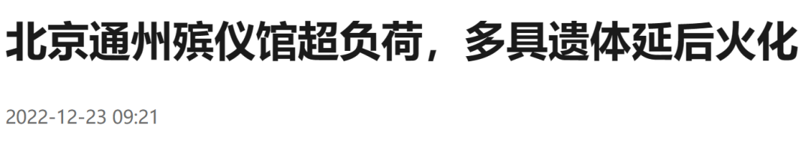
最后，还是给那些坚持说真话的地方点赞，你告诉大家实情，相信大家是有勇气积极面对的。
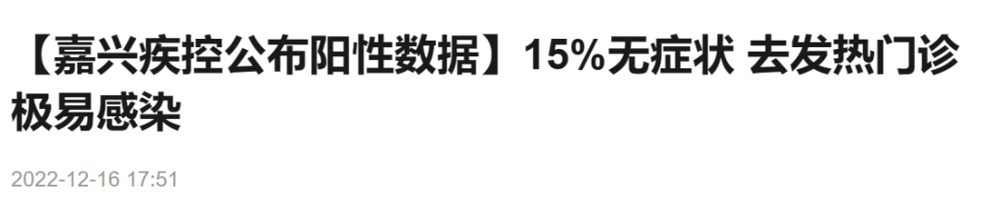
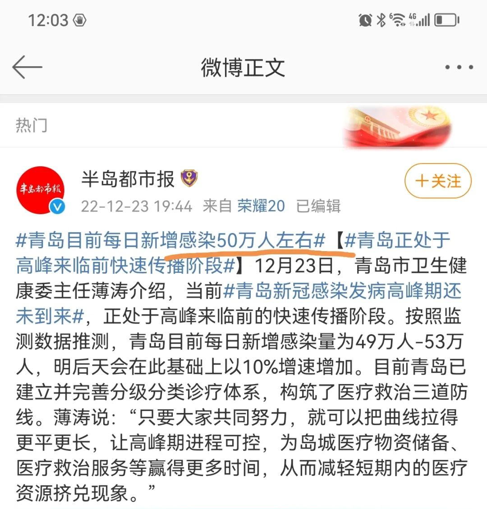
**谎言，才是击碎凝聚力的铁锤。**
**
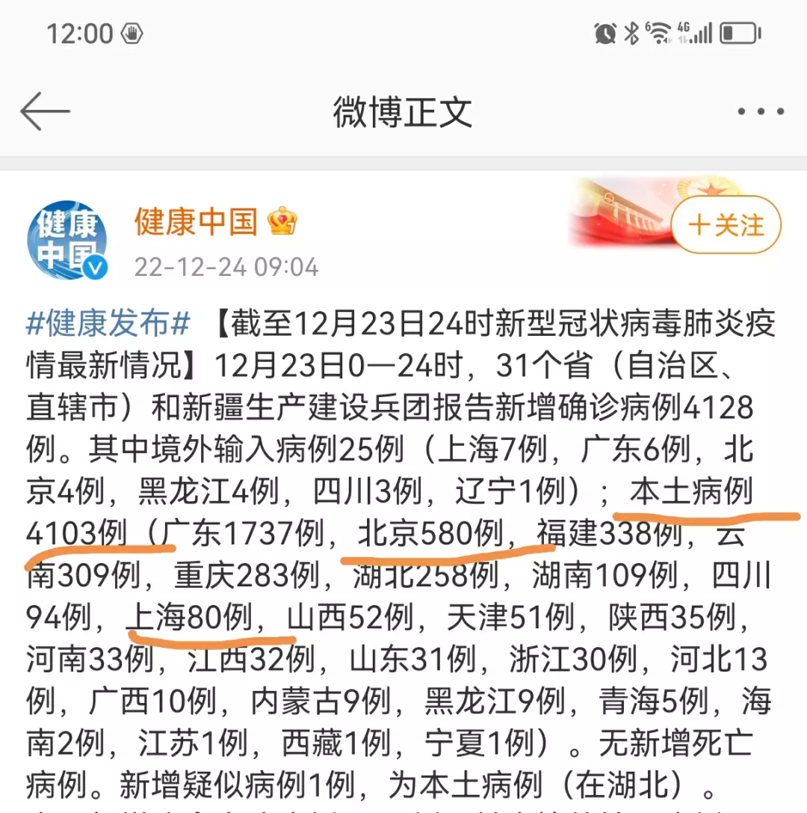
**北京的记者朋友，有的28岁住小汤山，还有的眼疾手快，抓住商场唯一的一个顾客感受生活气息。**
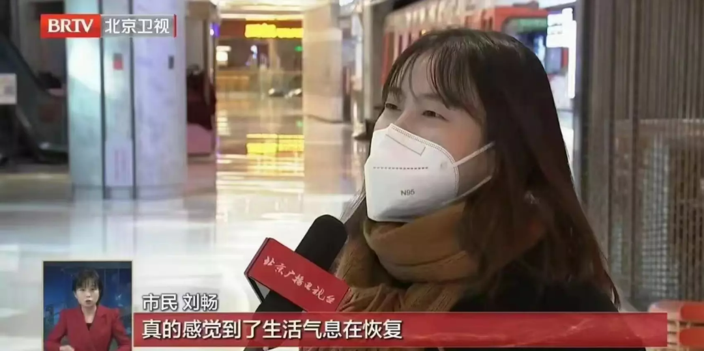
**现在影响全国人民心情，耽误大家康复的，恐怕就是这类新闻了。**
**没新闻就别发了，真的。**
**大家看6月发表在CDCweekly 上的paper，有没有人能解释一下这个接近80%无症状，4%发烧的数据是怎么来的？**
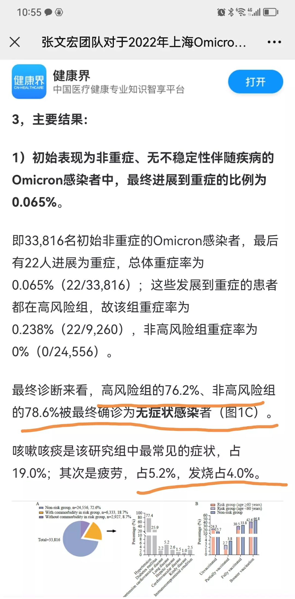
无症状可以修改定义，那发烧呢？4%发烧怎么统计的呀？
如果说现在和3-5月的变量是温度，那么就是病毒表现跟温度强相关，广东的朋友能不能告诉我，你们那里4%发烧吗？
**可能是我学术素养不够，我想破脑袋也想不明白。**
放开是必然选项，大家多少可以理解，但是直到现在还要愚弄大众，欺骗老百姓，除了把大家的智商人格按在地上踩踏，更是对高危患者的不人道。
有多少人是信了专家的90%无症状，小感冒而掉以轻心呢？
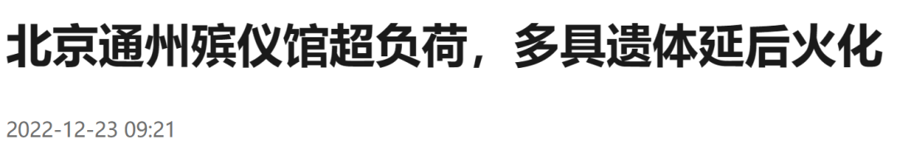
最后，还是给那些坚持说真话的地方点赞，你告诉大家实情，相信大家是有勇气积极面对的。
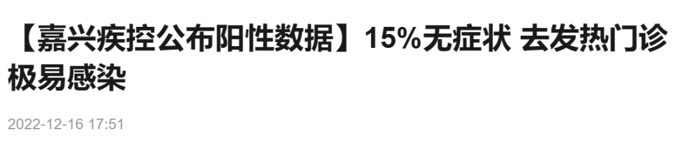
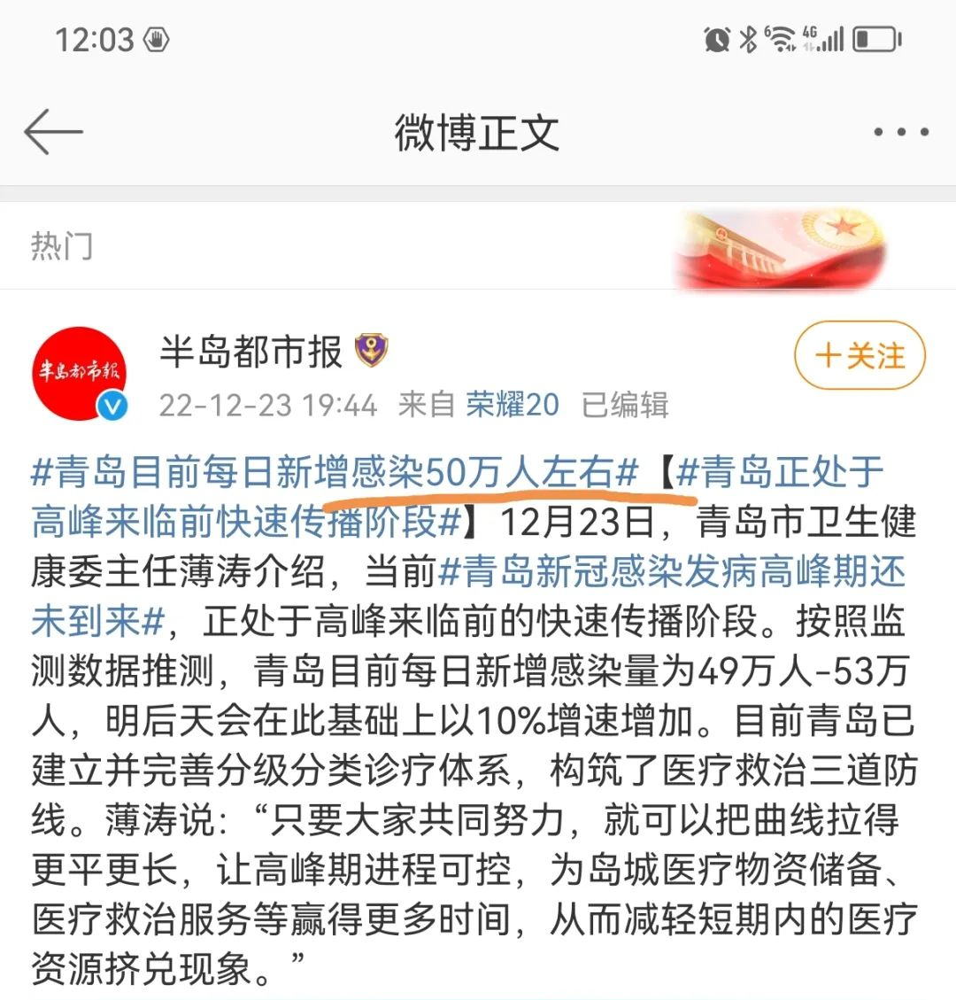
**谎言，才是击碎凝聚力的铁锤。**
**
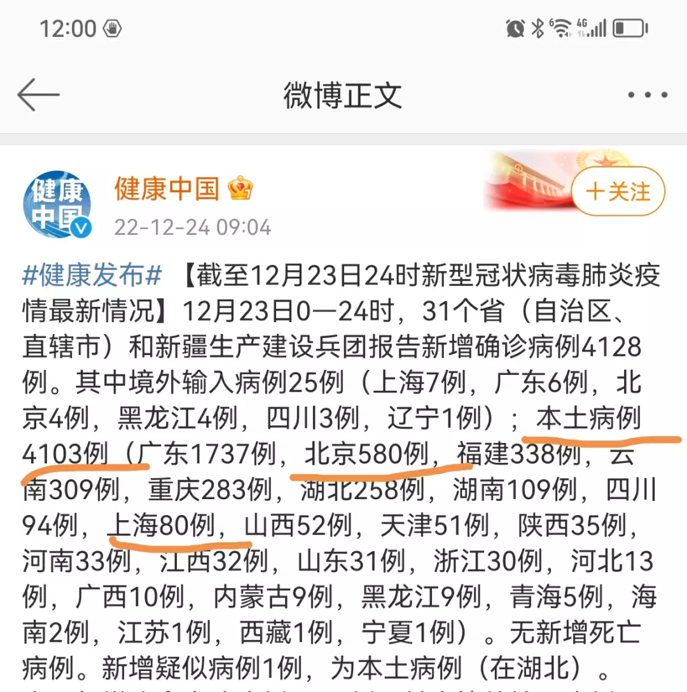
**北京的记者朋友，有的28岁住小汤山，还有的眼疾手快，抓住商场唯一的一个顾客感受生活气息。**
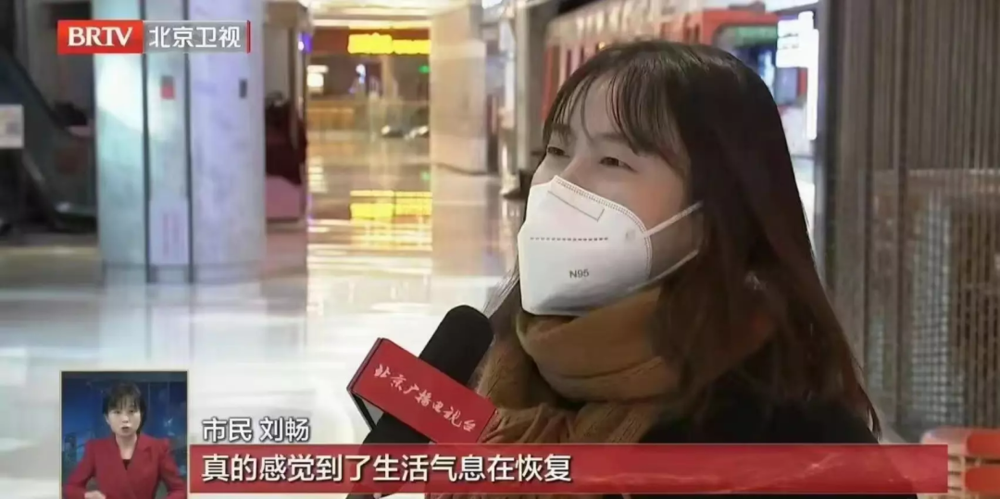
**现在影响全国人民心情，耽误大家康复的，恐怕就是这类新闻了。**
**没新闻就别发了，真的。**
**大家看6月发表在CDCweekly 上的paper，有没有人能解释一下这个接近80%无症状，4%发烧的数据是怎么来的？**
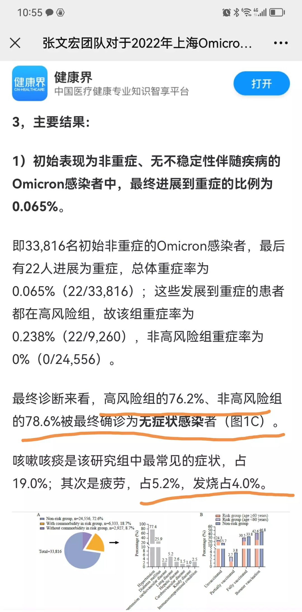
无症状可以修改定义，那发烧呢？4%发烧怎么统计的呀？
如果说现在和3-5月的变量是温度，那么就是病毒表现跟温度强相关，广东的朋友能不能告诉我，你们那里4%发烧吗？
**可能是我学术素养不够，我想破脑袋也想不明白。**
放开是必然选项，大家多少可以理解，但是直到现在还要愚弄大众，欺骗老百姓，除了把大家的智商人格按在地上踩踏，更是对高危患者的不人道。
有多少人是信了专家的90%无症状，小感冒而掉以轻心呢？
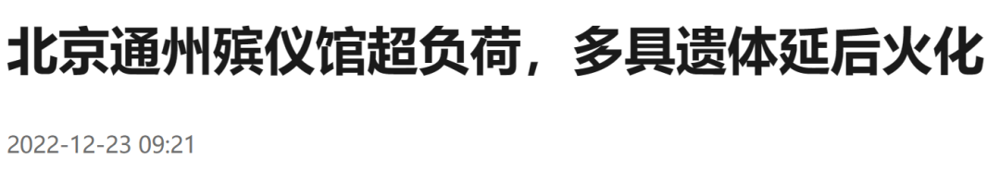
最后，还是给那些坚持说真话的地方点赞，你告诉大家实情，相信大家是有勇气积极面对的。
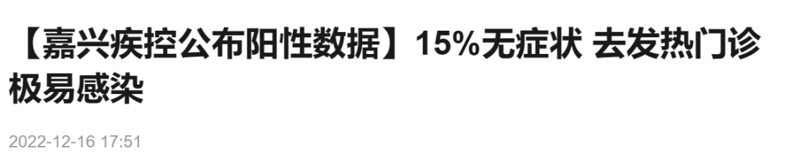
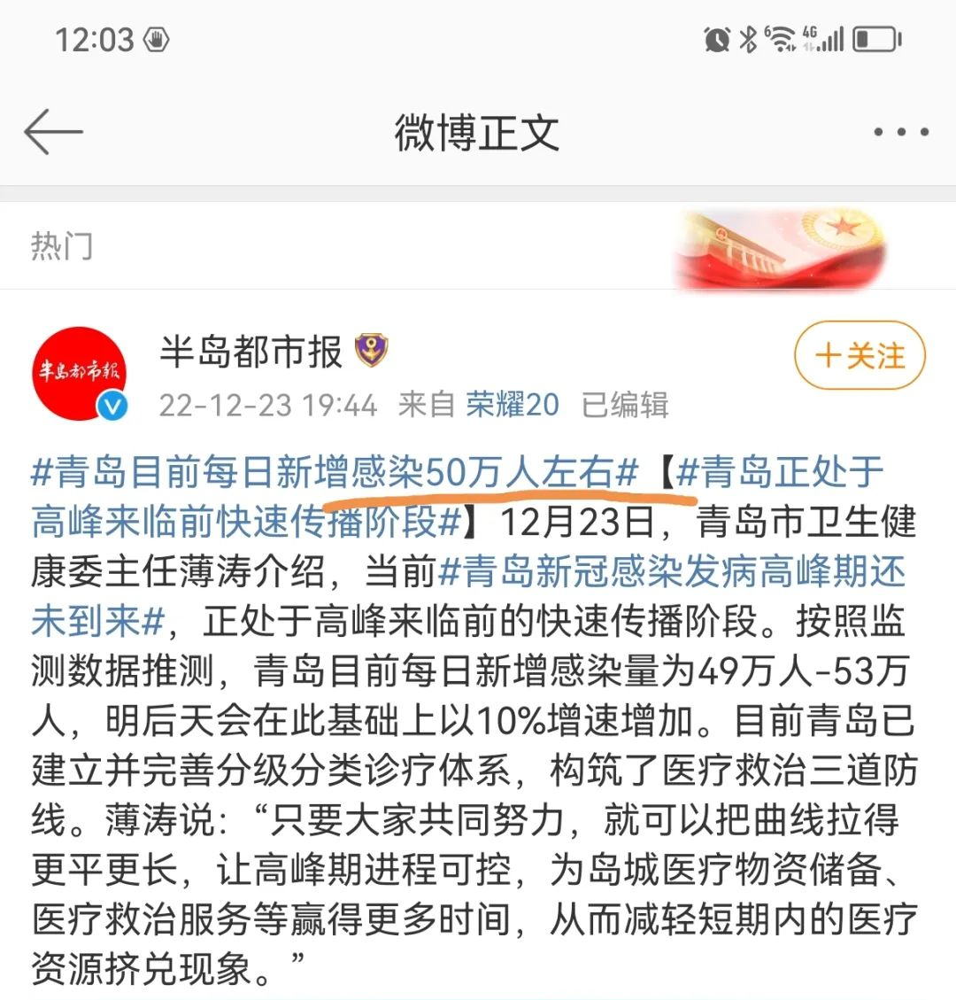
**谎言，才是击碎凝聚力的铁锤。**